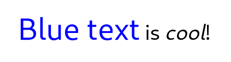
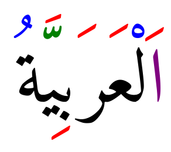

Text Attributes
Attributed text is used in a number of places in Pango. It is used as the
input to the itemization process and also when creating a PangoLayout.
Attributes can influence the various stages of the rendering pipeline. For example, font or size attributes will influence the font selection that is happening during itemization, font features and letterspacing attributes will influence shaping, and color or underline attributes will be used for rendering.
Pango uses a simple structs for individual attributes, such as
PangoAttrColor or PangoAttrFontDesc. Each attribute has a type,
and a start and end index that determine the range of characters that the attribute
applies to. See the PangoAttrType enumeration for all the possible
attribute types.
Attributes rarely come alone. Pango uses the PangoAttrList structure
to hold all attributes that apply to a piece of text.
Pango Markup
Frequently, you want to display some text to the user with attributes applied to
part of the text (for example, you might want bold or italicized words). With the
base Pango interfaces, you could create a PangoAttrList and apply it to
the text; the problem is that you’d need to apply attributes to some numeric range
of characters, for example “characters 12-17.” This is broken from an
internationalization standpoint; once the text is translated, the word you wanted
to italicize could be in a different position.
The solution is to include the text attributes in the string to be translated.
Pango provides this feature with a small markup language. You can parse a marked-up
string into the string text plus a PangoAttrList using either of
pango_parse_markup() or pango_markup_parser_new().
A simple example of a marked-up string might be:
<span foreground="blue" size="x-large">Blue text</span> is <i>cool</i>!

A more elaborate example of using markup to color combining marks in Arabic text:
<span foreground="purple">ا</span><span foreground="red">َ</span>ل<span foreground="blue">ْ</span>ع<span foreground="red">َ</span>ر<span foreground="red">َ</span>ب<span foreground="red">ِ</span>ي<span foreground="green">ّ</span><span foreground="red">َ</span>ة<span foreground="blue">ُ</span>

Pango uses GMarkup to parse this language, which means that XML features
such as numeric character entities such as © for © can be used too.
The root tag of a marked-up document is <markup>, but pango_parse_markup()
allows you to omit this tag, so you will most likely never need to use it.
The most general markup tag is <span>, then there are some convenience tags.
The <span> Attributes
- font
- font_desc
- A font description string, such as “Sans Italic 12”. See
pango_font_description_from_string()for a description of the format of the string representation. Note that any other span attributes will override this description. So if you have “Sans Italic” and also a style=”normal” attribute, you will get Sans normal, not italic. - font_family
- face
- A font family name.
- font_size
- size
- Font size in 1024ths of a point, or in points (e.g. ‘12.5pt’), or one of the absolute sizes ‘xx-small’, ‘x-small’, ‘small’, ‘medium’, ‘large’, ‘x-large’, ‘xx-large’, or a percentage (e.g. ‘200%’), or one of the relative sizes ‘smaller’ or ‘larger’. If you want to specify a absolute size, it’s usually easier to take advantage of the ability to specify a partial font description using ‘font’; you can use font=‘12.5’ rather than size=‘12800’ or size=‘12.5pt’. Support for specifying font sizes in points or as percentages was added in Pango 1.50.
- font_style
- style
- One of ‘normal’, ‘oblique’, ‘italic’.
- font_weight
- weight
- One of ‘ultralight’, ‘light’, ‘normal’, ‘bold’, ‘ultrabold’, ‘heavy’, or a numeric weight.
- font_variant
- variant
- One of ‘normal’, ‘small-caps’, ‘all-small-caps’, ‘petite-caps’, ‘all-petite-caps’, ‘unicase’, ‘title-caps’. Values other than ‘normal’ and ‘small-caps’ are available since 1.50.
- font_stretch
- stretch
- One of ‘ultracondensed’, ‘extracondensed’, ‘condensed’, ‘semicondensed’, ‘normal’, ‘semiexpanded’, ‘expanded’, ‘extraexpanded’, ‘ultraexpanded’.
- font_features
- A comma-separated list of OpenType font feature settings, in the same syntax as
accepted by CSS. E.g:
font_features='dlig=1, -kern, afrc on'. - foreground
- fgcolor
- color
- An RGB color specification such as ‘#00FF00’ or a color name such as ‘red’. Since 1.38, an RGBA color specification such as ‘#00FF007F’ will be interpreted as specifying both a foreground color and foreground alpha.
- background
- bgcolor
- An RGB color specification such as ‘#00FF00’ or a color name such as ‘red’. Since 1.38, an RGBA color specification such as ‘#00FF007F’ will be interpreted as specifying both a background color and background alpha.
- alpha
- fgalpha
- An alpha value for the foreground color, either a plain integer between 1 and 65536 or a percentage value like ‘50%’.
- background_alpha
- bgalpha
- An alpha value for the background color, either a plain integer between 1 and 65536 or a percentage value like ‘50%’.
- underline
- One of ‘none’, ‘single’, ‘double’, ‘low’, ‘error’.
- underline_color
- The color of underlines; an RGB color specification such as ‘#00FF00’ or a color name such as ‘red’.
- overline
- One of ‘none’ or ‘single’. Overline support was added in Pango 1.46.
- overline_color
- The color of overlines; an RGB color specification such as ‘#00FF00’ or a color name such as ‘red’. Overline support was added in Pango 1.46.
- rise
- Vertical displacement, in Pango units or in points (e.g. ‘5pt’). Can be negative for subscript, positive for superscript. Support for specifying rise in points was added in Pango 1.50.
- baseline_shift
- Vertical displacement. In contrast to rise, baseline_shift attributes are cumulative. The value can be a length in Pango units or in points (e.g. ‘5pt’), or ‘superscript’ or ‘subscript’. Available since 1.50.
- font_scale:
- Font size change. The possible values are ‘superscript’, ‘subscript’ or ‘small-caps’. This is similar to the font_size values ‘smaller’ or ‘larger’, but uses font metrics to find the new size. Available since 1.50.
- strikethrough
- ‘true’ or ‘false’ whether to strike through the text.
- strikethrough_color
- The color of strikethrough lines; an RGB color specification such as ‘#00FF00’ or a color name such as ‘red’.
- fallback
- ‘true’ or ‘false’ whether to enable fallback. If disabled, then characters will only be used from the closest matching font on the system. No fallback will be done to other fonts on the system that might contain the characters in the text. Fallback is enabled by default. Most applications should not disable fallback.
- lang
- A language code, indicating the text language.
- letter_spacing
- Inter-letter spacing in 1024ths of a point.
- gravity
- One of ‘south’, ‘east’, ‘north’, ‘west’, ‘auto’.
- gravity_hint
- One of ‘natural’, ‘strong’, ‘line’.
- show
- Specifies what special characters to show visibly. The value can be ‘none’ or a combination of ‘spaces’, ‘line-breaks’ and ‘ignorables’, combined with ‘|’. Support for showing special characters was added in Pango 1.44.
- insert_hyphens
- ‘true’ or ‘false’ to indicate whether hyphens should be inserted when breaking lines in the middle of words. Available since Pango 1.44.
- allow_breaks
- ‘true’ or ‘false’ to indicate whether breaking lines is allowed. Available since Pango 1.44.
- line_height
- Overrides the line height. The value can be either a factor (< 1024) that is used to scale up the logical extents of runs or an absolute value (in 1024th of a point). Available since Pango 1.50.
- text_transform
- Specifies how characters are transformed during shaping. The values can be ‘none’, ‘lowercase’, ‘uppercase’ or ‘capitalize’. Support for text transformation was added in Pango 1.50.
- segment
- Overrides word or sentence boundaries. The value can be ‘word’ or ‘sentence’, to indicate that the span should be treated as a single word or sentence. Overlapping segments will be split to allow this, and line breaks will be adjusted accordingly. Available since Pango 1.50.
Convenience Tags
<b>- Bold
<big>- Makes font relatively larger, equivalent to
<span size="larger"> <i>- Italic
<s>- Strikethrough
<sub>- Subscript
<sup>- Superscript
<small>- Makes font relatively smaller, equivalent to
<span size="smaller"> <tt>- Monospace font
<u>- Underline